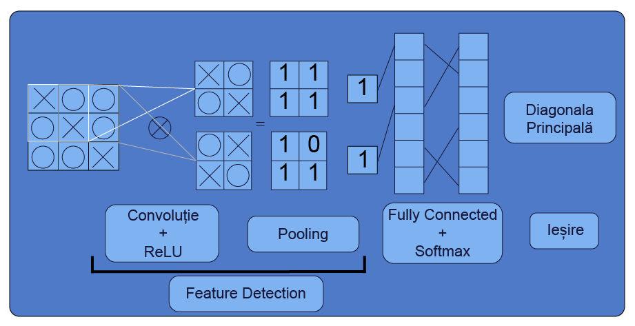
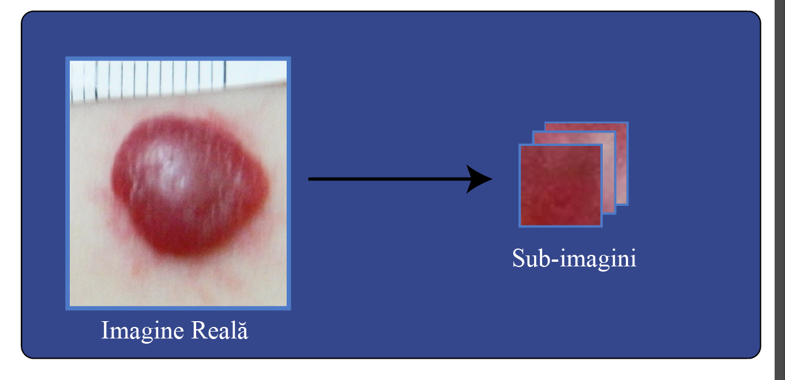

Lucrare
PDF-ul final al proiectului de diplomă.
Deschide PDFProiect de diplomă · Inginerie Medicală · 2018
O lucrare despre folosirea rețelelor neuronale convoluționale pentru analiza și clasificarea imaginilor medicale asociate hemangioamelor infantile.
Proiectul combină preprocesarea imaginilor, generarea de sub-imagini și antrenarea unor arhitecturi CNN în MATLAB pentru clasificarea leziunilor.
O selecție de figuri din lucrare și prezentare.




Repo-ul este gândit ca vitrină publică: documente finale, cod selectat și imagini reprezentative, fără date medicale brute.
PDF-ul final al proiectului de diplomă.
Deschide PDFSlide deck-ul folosit pentru susținere.
Deschide prezentareaScripturi MATLAB pentru preprocesare, CNN și evaluare.
Vezi sursele